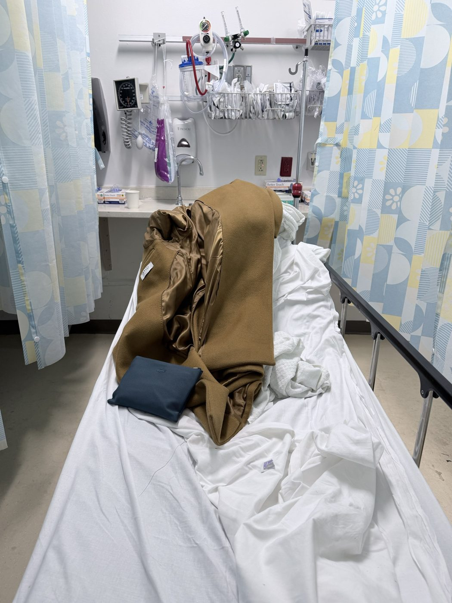
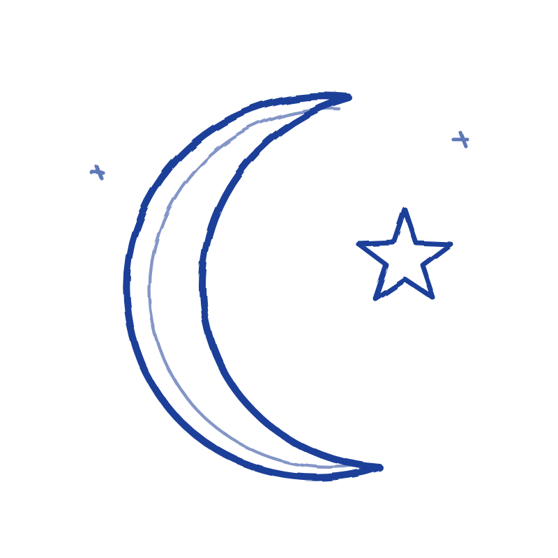
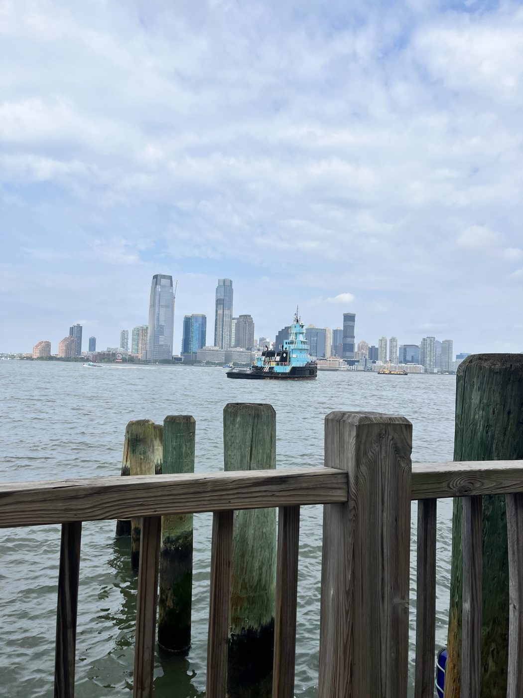
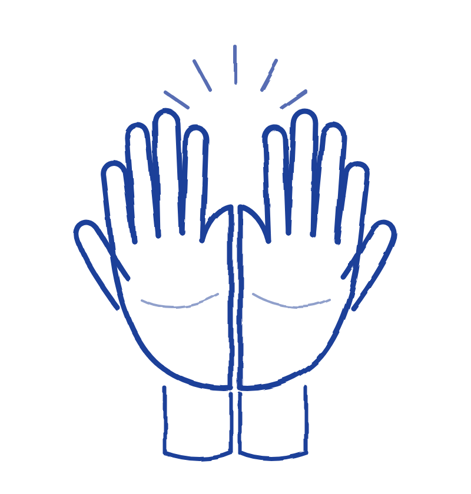

заметка · ноябрь 2026
🌙 Палата 27 · Безразличие · Одна ночь
В ту ночь в приёмном покое я была между жизнью и смертью. Тошнота, боль, потеря сознания. Мне было страшно, и я была одна.

палата 27

одна
А для людей вокруг я была просто «палата 27». Ещё одна строчка в списке, ещё один анализ, который можно отправить потом. Его так и не отправили.
Безразличие

Есть боль, которая ранит сильнее самой беды: когда для других ты не человек, а функция.
Для арендодателя ты ресурс. Пока ты платишь вовремя и ни о чём не просишь, ты «хороший жилец». Стоит заболеть, задержать платёж или попросить что-то починить, и на тебя смотрят как на проблему, которую проще заменить.
В отношениях ты тоже бываешь ресурсом. Тебя любят за удобство: за заботу, деньги, время, терпение. Но когда тебе самой нужна поддержка, оказывается, что это «неудобно».
А в приёмном покое твоя граница между жизнью и смертью превращается в очередную задачу в списке. Тебе страшно и больно, а для них это просто рабочий момент.
Почему так происходит? Людей перегружают, системы требуют скорости, а не человечности. Психика защищается и отключает сочувствие. Но Коран называет и более глубокую причину: ожесточение сердца. «Затем ваши сердца ожесточились и стали подобны камням или даже твёрже» (2:74). Сердце, которое долго не упражняют в милосердии, каменеет.
Коран напоминает, что человек никогда не бывает просто ресурсом: «Мы почтили сынов Адама» (17:70). Достоинство дано каждому Творцом, а не начальником, не партнёром и не системой.
Целая сура, «Аль-Маун», посвящена безразличию. Горе тем, кто молится напоказ и при этом «отказывает даже в малом» (107:4–7). Вера, которая не дотягивается до человека рядом, пуста.
Тем, кто думает, что работа может быть без сострадания: «Кто спасёт жизнь одного человека, тот словно спас жизнь всех людей» (5:32). Для врача и медсестры это не просто «задача». Это одно из величайших дел, какие доступны человеку.
Тем, кто использует близких: Аллах сделал отношения между супругами отношениями «любви и милосердия» (30:21), а не выгоды.
Тем, кто берёт у работника всё, а отдаёт меньше: «Горе обвешивающим, которые требуют полной меры, когда отмеряют им, и недодают, когда отмеряют сами» (83:1–3). Пророк ﷺ сказал: «Отдайте наёмному работнику плату, пока не высох его пот».

сердце не каменеет
Для себя я вынесла вот что. Безразличие других не уменьшает твою ценность, она у Аллаха. А помощь приходит «оттуда, откуда не ожидаешь» (65:3), порой от совершенно незнакомых людей, которые оказались добрее самых близких.
И путь, к которому зовёт Коран, крутой, но ясный: быть среди тех, кто «заповедует друг другу терпение и заповедует друг другу милосердие» (90:17).
Не дай чужому равнодушию ожесточить и твоё сердце.
P.S. Одна ночь

один ужин
мне лучше ☀️
Один ужин и столько всего, что могло пойти не так.
Тошнота, боль, потеря сознания. И анализ крови, которого я ждала часами, но он так и не дошёл до лаборатории.
По отдельности каждая мелочь кажется ничем. Вместе они могут стать чем-то очень серьёзным.
Сегодня мне лучше.

الحمد لله
Альхамдулиллях за каждый вдох.
Берегите себя.
Цитаты из Корана — по переводу смыслов Э. Кулиева · об Эльмире Кулиеве
если откликнулось, оставь сердечко 🤍
можно нажимать сколько хочется
спасибо, записка у меня 🤍